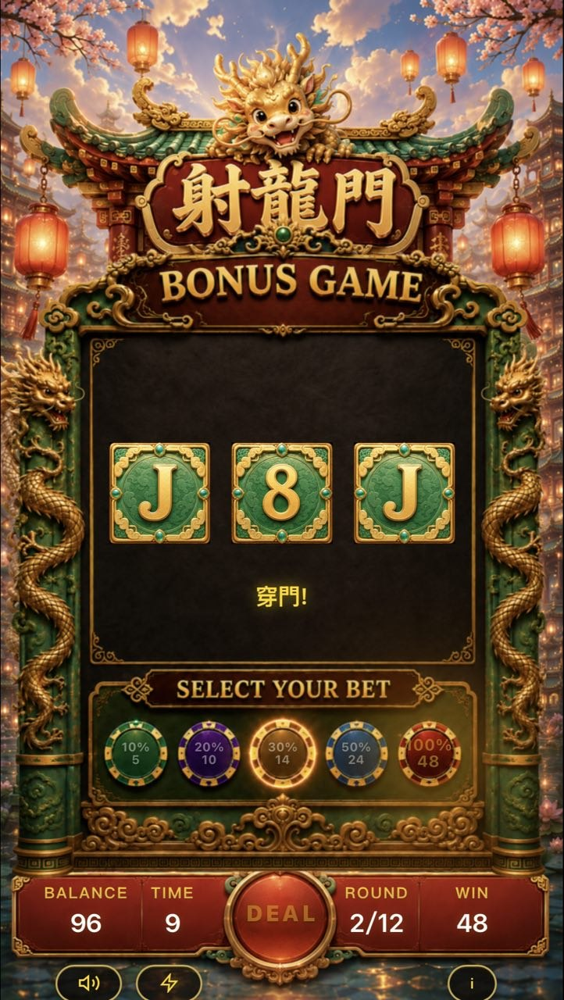

🐲 射龍門 Dragon Gate Slot
AI Agent Fleet 協作開發 書面報告
2026.05.26 — 2026.06.29
一、專案概覽
《射龍門 Slot》是一款以傳統撲克牌「射龍門」玩法為核心的 3×3 老虎機遊戲，採用現代國潮風格（墨黑底／中國紅／燙金），由 10 個 AI Agent 分工協作，在 5 週內從零開發完成的完整可玩 Web 遊戲原型。
| 項目 | 內容 |
|---|---|
| 遊戲名稱 | 射龍門 Dragon Gate Slot |
| 開發時程 | 2026/05/26 ~ 06/29（34 天） |
| 團隊組成 | 10 AI Agents 分工協作 |
| 程式碼量 | 9,267+ 行 |
| 美術素材 | 24 張（AI 生成） |
| 遊戲模式 | Main Game + Free Game + Bonus Game + Jackpot |
| Git Commits | 752 |
Agent 分工
二、AI 工具清單
| 工具 | 用途 | 應用環節 | 使用頻率 |
|---|---|---|---|
| Kiro CLI + AgEnD Fleet | 多 Agent 協作執行環境 | 全環節 | 每日持續 |
| Claude Opus 4.6 | 程式碼生成/邏輯推理 | 程式/企劃/數學 | 每個任務 |
| Pollinations.ai | AI 圖片素材生成 | 美術設計 | 初期集中 |
| Python 蒙地卡羅模擬 | RTP 機率驗證 | 數學模型 | 每次調參 |
| Google Apps Script | 排行榜後端 API | 多人系統 | 部署階段 |
| PIL (Pillow) | 圖片裁切/後處理 | 美術後製 | 素材階段 |
三、開發流程與 AI 應用環節
六大開發階段
每階段 AI 介入方式
| 階段 | AI 介入方式 |
|---|---|
| 企劃輸入 | Agent 讀取需求→市場調研，產出開發計畫 |
| 遊戲規格整理 | Agent 產出完整企劃規格書 v2.0 |
| 數學設計 | 數學設計與機率驗算 |
| 美術製作 | GPT 批次生成 24 張素材 |
| 程式開發 | V1→V2→V3 三版迭代，自動化測試、Bug 回報即時修正，含 FG/BG/JP |
| 部署上線 | 部署上線 |
AI 協作 SOP
所有需求透過 Telegram 傳達，Coordinator Agent 即時拆解為具體任務指派給對應 Agent。Agent 獨立完成修改、測試、commit 並 push。整個流程從需求到上線通常 < 5 分鐘。


四、Before/After 成效對比
| 項目 | 傳統開發 | AI Agent 開發 |
|---|---|---|
| 企劃規格 | 數天撰寫文件 | 3 分鐘 TG 對話完成 |
| 美術素材 | 外包數週 | GPT 生成 + Agent 拼接 |
| 數學模型 | 手算數天 | 2 分鐘 Python 模擬驗證 |
| 程式開發 | 多人協作數週 | 10 AI agents × 5 週 |
| QA 測試 | 人工逐項測試 | Agent 自動掃描+即時修正 |
| Bug 修正 | 1-3 天 | < 5 分鐘 |
| 跨部門溝通 | 會議/文件/等待 | Coordinator 即時派工 |
「5 分鐘修正」案例
| 需求/Bug | 耗時 | 做了什麼 |
|---|---|---|
| S23 Ultra symbol 不置中 | ~5 min | 停輪後改用 CSS flex 等分，避免 sub-pixel |
| BG 穿門倍率 ×3→×1 | ~30 sec | 改 getPassMult return 值，commit+push |
| 排行榜分數被當字串拼接 | ~3 min | 所有 score 加 Number() 轉換+排序修正 |
五、關鍵開發軌跡紀錄
Before / After 案例
紀錄 1：V1 核心邏輯 — 從零到可玩
Before
unity/ 目錄僅有 README.md，無任何程式碼
After（5 分鐘）
4 支核心模組：SlotEngine、DragonGateJudge、PayoutCalculator、GameManager。完整一輪 Spin→判定→派彩可運行。
紀錄 2：美術素材批次生成
Before
無任何遊戲美術素材
After（5 分鐘）
GPT 產出 24 張國潮風格素材（撲克牌面 13 張 + 背景 + JP 符號 + 特效元素）
紀錄 3：RTP 機率修正
Before
RTP >100%（玩家可 exploit 獲利）
After（2 分鐘）
MISS_BIAS 20% + FG_MISS_BIAS 30%，RTP 壓到 ~82%，exploit 策略也 <100%
紀錄 4：Jackpot 機制迭代
Before
固定金額 JP（無策略深度）
After（10 分鐘）
Symbol pool + bet 加權 + 三同中獎，高 bet 有更高 GRAND 機率
紀錄 5：排行榜多人競賽
Before
單機遊戲，無社交互動
After（15 分鐘）
Google Apps Script 後端 + LockService 防並發 + 即時排行榜
美術素材生成的瓶頸與突破
開發初期使用 Pollinations.ai 批量生成素材，但遇到嚴重品質問題：生成風格不統一、解析度不穩定、構圖無法直接用於遊戲 UI。原始 AI 生成的畫面風格粗糙，與期望的國潮龍門主題差距甚大。
解決方案：改用 GPT 逐張生成單一素材圖片（撲克牌、龍珠、背景等），上傳到 GitHub 後透過 Agent 協助調整 CSS 座標與排版進行手工拼接。整個過程透過 Telegram 與 Agent 反覆描述位置座標，逐步微調到正確位置——等同於用自然語言「遙控」AI 做 UI 排版。
最終產出了風格統一的國潮龍門遊戲介面，所有元素（轉輪、按鈕、背景、吉祥物）視覺一致。
Before：AI 原始生成

▲ Pollinations AI 原始生成 — 風格粗糙、不可控
Process：拼接調整過程


▲ 透過 Telegram 與 Agent 反覆調整座標、排版、比例
After：最終成果

▲ 風格統一的國潮龍門遊戲介面
遊戲素材一覽

▲ 遊戲素材一覽（24 張 AI 生成）
六、遊戲成果展示
遊戲畫面




核心玩法
3×3 盤面，每列獨立判定「射龍門」：左右欄決定門的上下限，中間欄開牌判定穿門。穿門倍率依門寬遞減（極窄×10、窄×5、普通×2、寬×1）。Scatter 收集滿 10 個可選擇 Free Game（8 轉免費+獎勵符號）或 Bonus Game（12 局牌局+保底）。全窄門時觸發 Jackpot 三格抽獎。
技術架構
RTP 驗證（蒙地卡羅模擬）
10 萬次模擬顯示 RTP 穩定收斂至 ~82%。MISS_BIAS = 20% 是關鍵控制參數。
競品差異化
| # | 獨特賣點 | 說明 |
|---|---|---|
| 1 | 市場唯一混合玩法 | 撲克牌射龍門 × Slot 轉輪，無同類競品 |
| 2 | 可感知風險回報 | 門寬直覺對應倍率（窄=高風險高回報） |
| 3 | 雙層副遊戲選擇 | FG（穩定累積）vs BG（高風險牌局）自選 |
| 4 | Symbol Pool JP | 三格獨立抽、bet 加權、視覺符號跟轉 |
| 5 | 多人即時競賽 | 倒計時+排行榜+組別平均分 |
七、創新亮點總結
開發模式創新
10 Agent 協作開發：每個 Agent 有明確職責、持久記憶、獨立執行能力。Coordinator 負責拆解需求和品質把關，挑戰者 Agent 主動尋找 exploit 和平衡問題。這不是「用 AI 當工具」，而是「用 AI 組成團隊」。
完整閉環
從概念到可遊玩的完整產品，全部由 AI agents 在 34 天內完成。涵蓋遊戲開發的每一個環節，沒有外包、沒有人工撰碼。
可規模化潛力
此開發模式可快速複製到其他遊戲類型：只需更換主題素材和數學模型，架構和流程完全可重用。同一套 Fleet 可以平行開發多款遊戲。
附錄
技術規格
| 參數 | 值 |
|---|---|
| BET 選項 | 15 / 30 / 60 / 150 / 300 / 600 / 900 / 1200 |
| RTP | ~82% |
| MG 倍率 | ×10 / ×5 / ×2 / ×1 |
| MISS_BIAS | MG 20% / FG 30% |
| Scatter Rate | 5% per cell |
| FG | 8 轉，獎勵 [0.2, 0.33, 0.5, 1.0, 1.5, 0] × bet |
| BG | 12 局，初始/保底 bet×2，穿門×1 |
| JP 觸發 | 全窄門 (gap≤3)，Symbol Pool 15格 |
| 初始籌碼 | 50,000 |